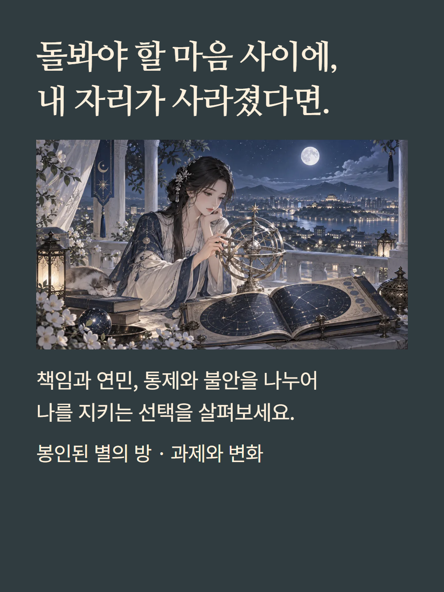
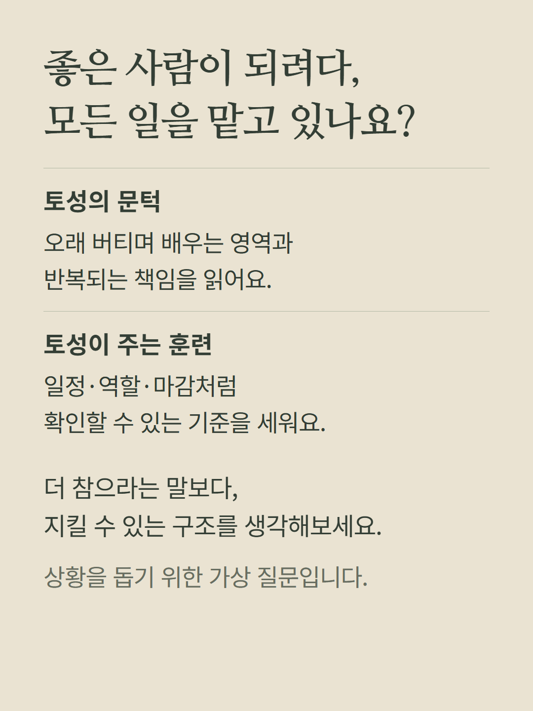
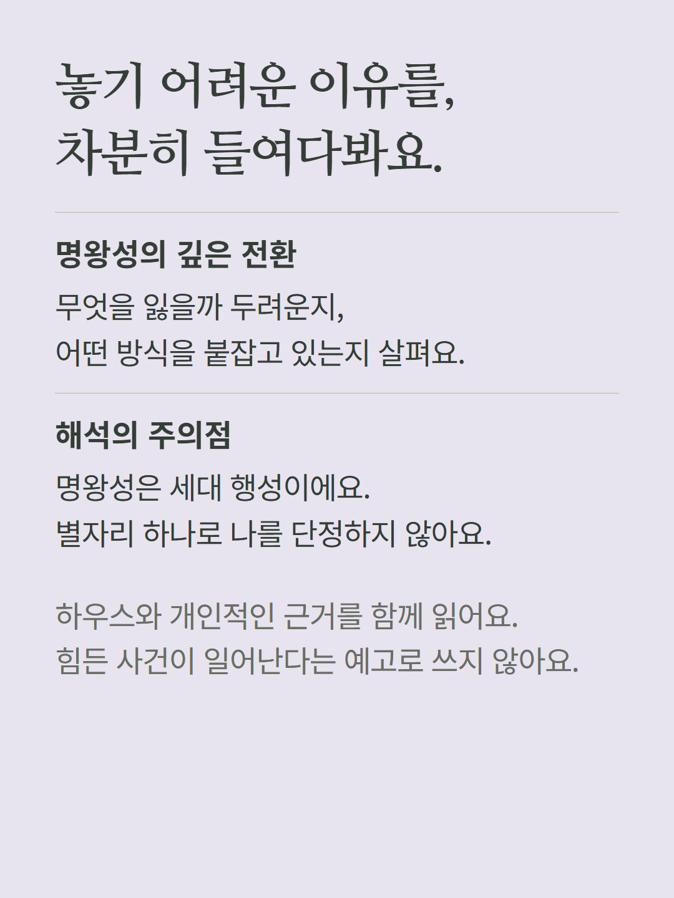
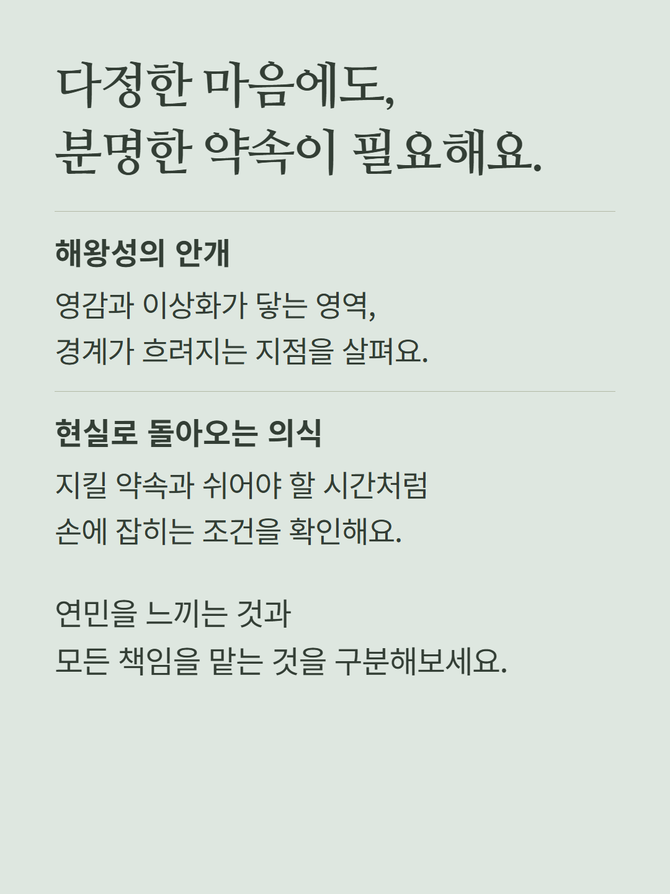
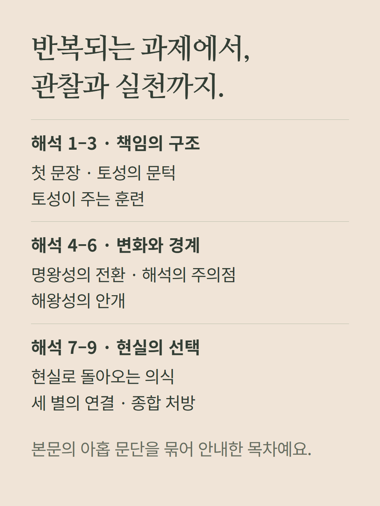
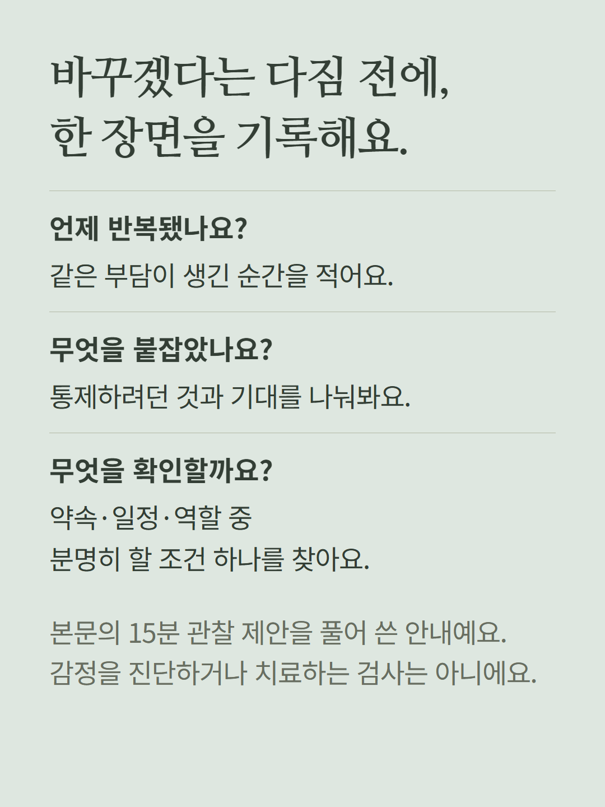
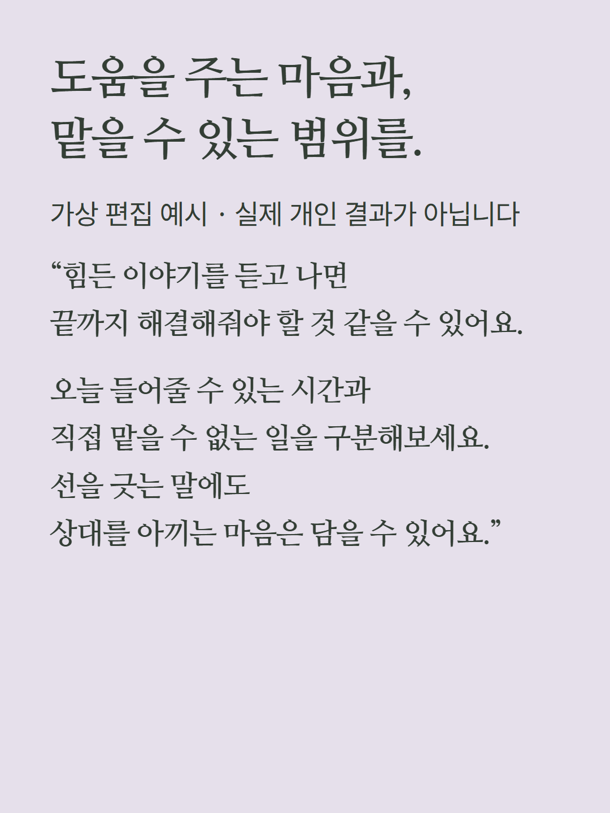
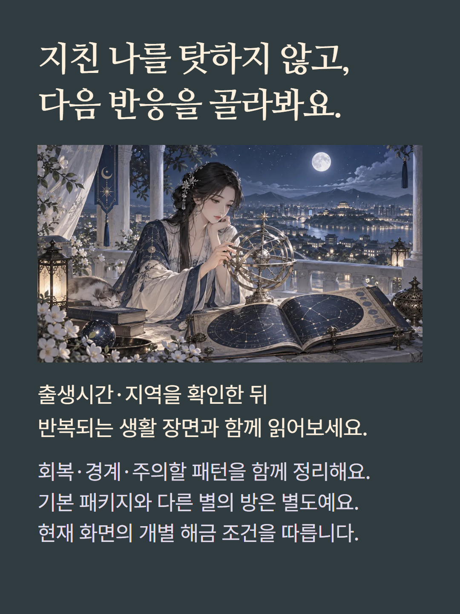

토성·명왕성·해왕성의 배치에서 반복되는 책임·통제·이상화와 경계를 읽는 개인 출생차트의 개별 해금 항목입니다. 아홉 문단의 해석과 회복·경계·관찰 포인트를 제공합니다. 명왕성은 세대 행성이므로 별자리 하나로 개인의 운명을 단정하지 않습니다. 출생시간·지역이 하우스 해석에 영향을 줍니다. 심리 진단·치료 또는 불행의 예고가 아닙니다. 예시는 가상 편집이며 기존 가격과 해금 정책을 따릅니다.